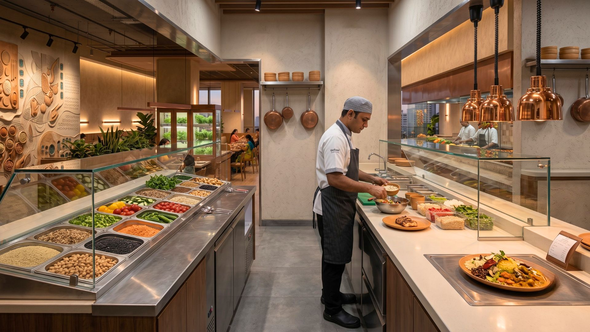
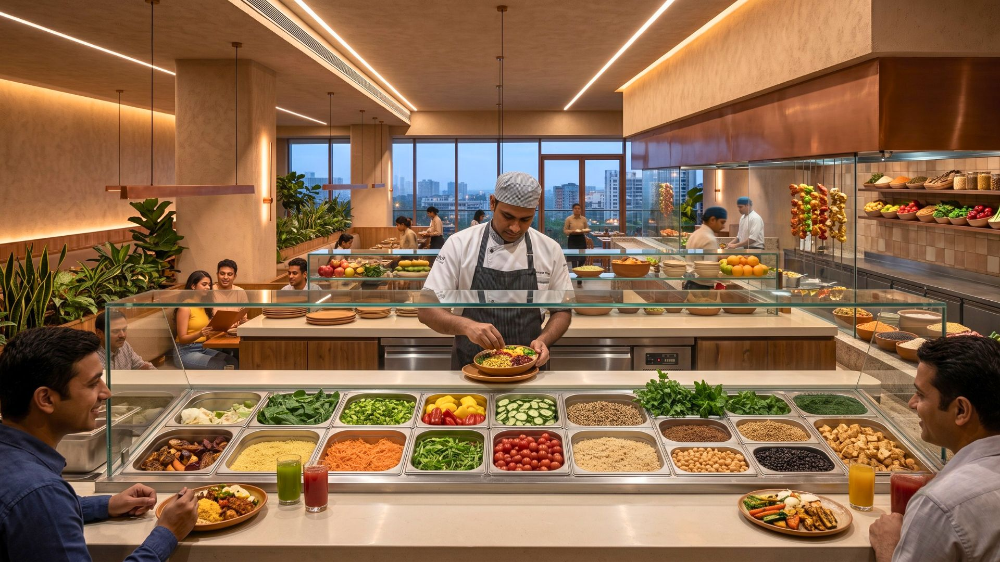
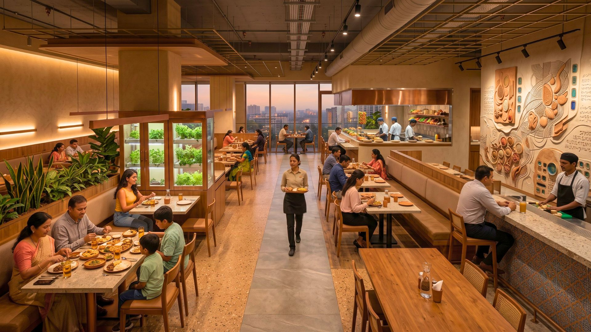
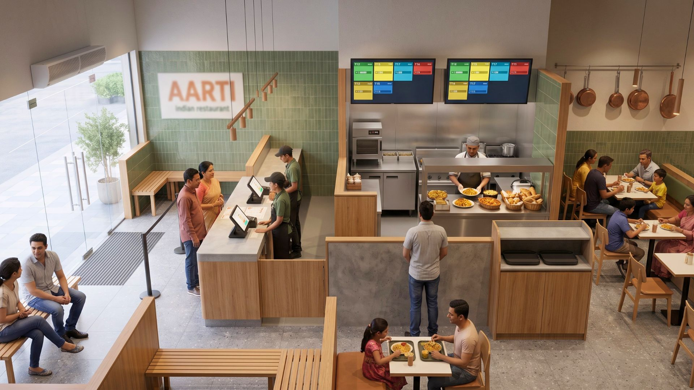
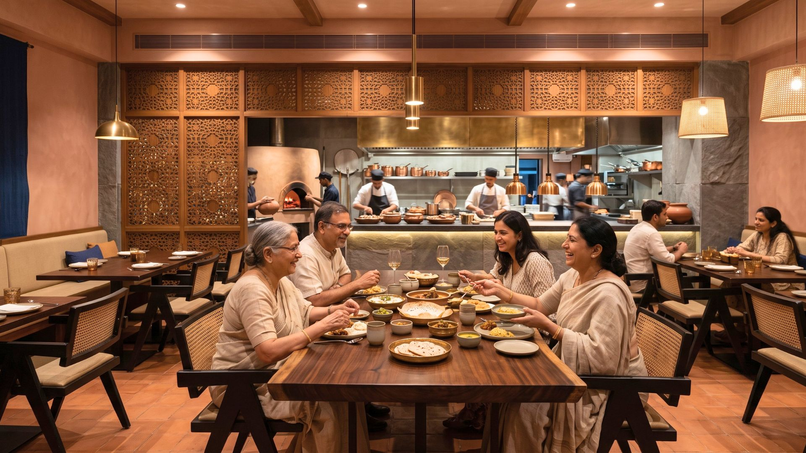

The food and beverage sector represents a massive industry, serving approximately 7.3 million livelihoods in India and catalysing growth across retail, agriculture, and transportation sectors.
COVID-19 disrupted the industry significantly, shifting consumer behaviour toward delivery and online grocery shopping. Post-pandemic recovery has brought "revenge dining," where consumers maximise their in-person dining experiences.
Modern restaurant design now emphasises ambience, comfort, and safety in equal measure. Sustainable and eco-friendly products are increasingly influencing brand preference too.
1. Adding Value to Nutrition

Approximately 54% of consumers consider healthfulness when making purchase decisions, particularly younger demographics. Social media awareness is driving demand for transparent ingredient lists, nutritional information, and organic options.
2. Environmental Concerns

Environmentally-conscious consumers are increasingly adopting plant-based diets. Sustainably sourced offerings are gaining popularity, expanding customer bases while promoting ethical sourcing practices.
3. Clean-Labelling Practices

Clean labelling emphasises natural, minimally processed ingredients customers can actually understand. This trend promotes transparency, regulatory compliance, and more sustainable production methods.
4. Culture

Cultural backgrounds significantly influence food preferences, acceptance of new foods, and dining choices. Global food companies need to understand cultural differences to serve diverse tastes effectively — and that extends to how a space is designed, not just what's on the menu.
5. The Ambience

Lighting, decor, and music create memorable experiences that influence customer perception and encourage social sharing. A strong ambience builds brand loyalty and reputation more reliably than almost any other lever an owner controls.
Conclusion
The F&B sector requires balancing innovation with tradition, and efficiency with sustainability. Companies that embrace transparent sourcing, ethical practices, and responsive market strategies are the ones that stay competitive.
Want a premium restaurant design that reflects what today's diners actually value? At SprintCo, we build spaces around consumer behaviour, not just aesthetics. Let's talk about your project.